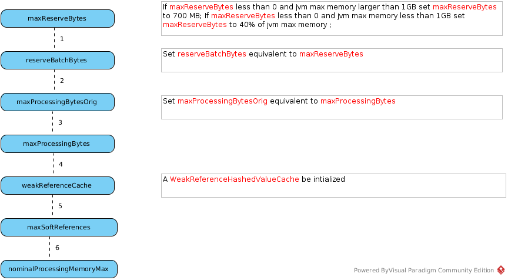

BufferManager
BufferManager Starting
There are 4 steps in BufferManager Starting:
-
Initialize buffer properties
-
Start buffer cleaner
-
Further initializing
-
Initialize buffer cache and storage manager
BufferManager Properties
| Name | Default | Description |
|---|---|---|
processorBatchSize |
256 |
Specifies the target row count of a TupleBatch |
maxProcessingBytes |
1 << 21 |
|
maxReserveBytes |
1 << 28 |
|
reserveBatchBytes |
0 |
|
maxProcessingBytesOrig |
null |
|
overheadBytes |
0 |
|
maxActivePlans |
20 |
|
useWeakReferences |
true |
|
inlineLobs |
true |
|
targetBytesPerRow |
2018 |
|
maxSoftReferences |
0 |
|
nominalProcessingMemoryMax |
1 << 21 |
|
activeBatchBytes |
0 |
|
readAttempts |
0 |
|
tsId |
0 |
|
batchAdded |
0 |
|
readCount |
0 |
|
writeCount |
0 |
|
referenceHit |
0 |
|
cleaning |
false |
|
removed |
0 |
Start buffer cleaner
Further initializing
The further initializing implemented by BufferManagerImpl’s initialize() method be invoked, the following properties or attributes be initializd as a order:
